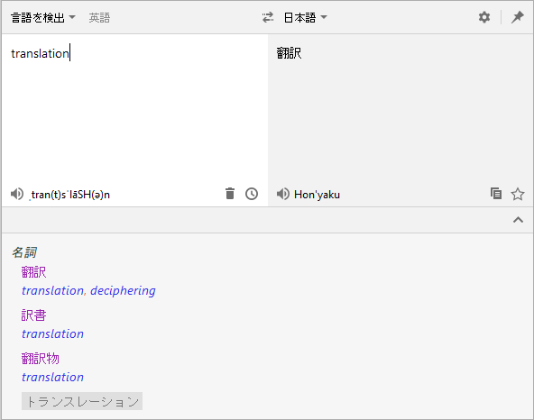
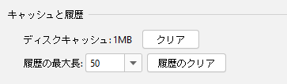
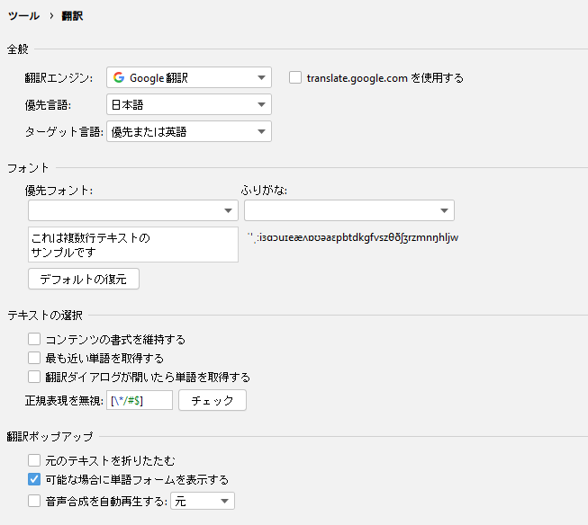

バージョン3.0（2020/12/05）
Translation v3.0へようこそ。このバージョンには、次の主要なアップデートが含まれています。
- 新しいプラグインロゴ - プラグインロゴの新しいデザイン
- 新しいユーザー インターフェイス - 完全に新しくデザインされた翻訳ダイアログと設定画面のUI
- さらに多くのキーボードショートカット - - マウス？それは何？
- ディスクキャッシュ - ディスクキャッシュのサポート
このリリース ノートをオンラインで読みたい場合は、こちらをご覧ください。
ロゴ
プラグインのために新しいロゴを設計しました。

翻訳
翻訳ダイアログ
翻訳ダイアログのユーザーインターフェイスが再設計され、よりシンプルで使いやすくなりました。

キーボードショートカット
翻訳ダイアログ、翻訳ポップアップなどのインターフェイスに便利なショートカットキーを多数追加し、キーボードを使用してほとんどの操作を実行できるようになりました。
-
翻訳ダイアログのショートカット：
- ソース言語の一覧を表示 - Alt + S
- ターゲット言語の一覧を表示 - Alt + T
- 言語を変更 - Alt + Shift + S
- ウィンドウの固定状態を切り替える - Alt + P
- TTS を再生 - Alt/Meta/Shift + Enter
- 単語帳にお気に入り - Ctrl/Meta + F
- 履歴の表示 - Ctrl/Meta + H
- 翻訳のコピー - Ctrl/Meta + Shift + C
- 入力を空にする - Ctrl/Meta + Shift + BackSpace/Delete
- さらに多くの翻訳を表示 - Ctrl/Meta + Down
- さらに多くの翻訳を非表示 - Ctrl/Meta + Up
-
翻訳バブルのショートカットキー：
- ダイアログで開く - Ctrl + Shift + Y / Control + Meta + U
-
クイックドキュメントウィンドウのショートカットキー：
- 自動翻訳のオン/オフ - Ctrl + Shift + Y / Control + Meta + U
クイックドキュメント翻訳
ドキュメントの長さが翻訳の制限を超えている場合、翻訳がキャンセルされ、メッセージが表示されます：

ディスクキャッシュ
翻訳結果をハードディスクにキャッシュするようになりました。同じ翻訳があった場合、キャッシュから読み込んで表示します。もちろん、設定ページでキャッシュをクリーンアップすることもできます：

設定ページ
設定画面のユーザーインターフェースを新たに見直し、IDEAに一致するUIスタイルになりました。また、設定ページが設定ツール > ツールのサブグループに移動されました。 設定画面が見つからないことで心配する必要はありません。翻訳ダイアログの目立つ箇所に設定画面へのアクセスを配置しました。ここから設定画面を素早く開けます。

謝意
本バージョンに対して多大な貢献をしてくれた下記の人々に感謝致します。
- Nikolay Tropin (@niktrop)
- 不明なデザイナー (@JetBrains): プラグインの新しいロゴPR #602